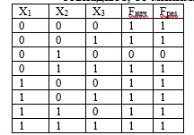
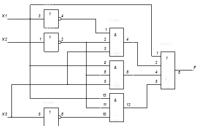

Практическая работа № 5
Тема: Минимизация логической функции по формулам и законам алгебры логики.
Дидактическая цель: закрепить теоретические знания по основам математической логики и выработать практические навыки минимизации логической функции по формулам и законам алгебры логики.Литература:
1. О.Е. Акимов. Дискретная математика. – М. Лаборатория Базовых Знаний. 2010. 1.3.
2. Ф.А. Новиков. Дискретная математика. – С-Пб.: Питер. 2008. 3.2.
3. С.В. Яблонский. Введение в дискретную математику. – М.: Высшая школа. 2007. Глава 1 §3.
4. Еловенко Н.А. Дискретная математика. Учебное пособие. – Волгоград. ГОУ СПО ВЭТК. 2008. Глава 3.
Ход занятия:
1. Проверка теоретической подготовки студентов (цель минимизации логической функции, три вида представления логической функции).
2. Инструктаж преподавателя о ходе выполнения работы.
3. Выполнение работы с использованием методических указаний по вариантам.
4. Подведение итогов и оценка работы студентов.
Порядок выполнения работы:
1. Ознакомиться с примером решения.
2. Решить задания по своему варианту соблюдая порядок оформления примера и оформить отчет (номер, тема и цель практической работы, решение задания по варианту, вывод).
3. Сделать выводы и предъявить отчет преподавателю.
Пример решения:
1. Используя формулы и законы алгебры логики, минимизируем начальную функцию:
X1 & X 2 & X3 X1 & X2 & X3 X1 & X 2 & X3 X3 = X1& X 2 & X3 X1 & X3& (X2
X2)X3= X1& X 2 & X3 X1 & X3 X3 = X1& X 2 & X3 X1 X3
2. Составим таблицы истинности для начальной и результирующей функции. Если они совпадают, то минимизация осуществлена правильно

Построим схемы начальной функции и результата. Если схема результирующей функции значительно меньше схемы начальной функции, следовательно, минимизация целесообразна. 

2 вариант